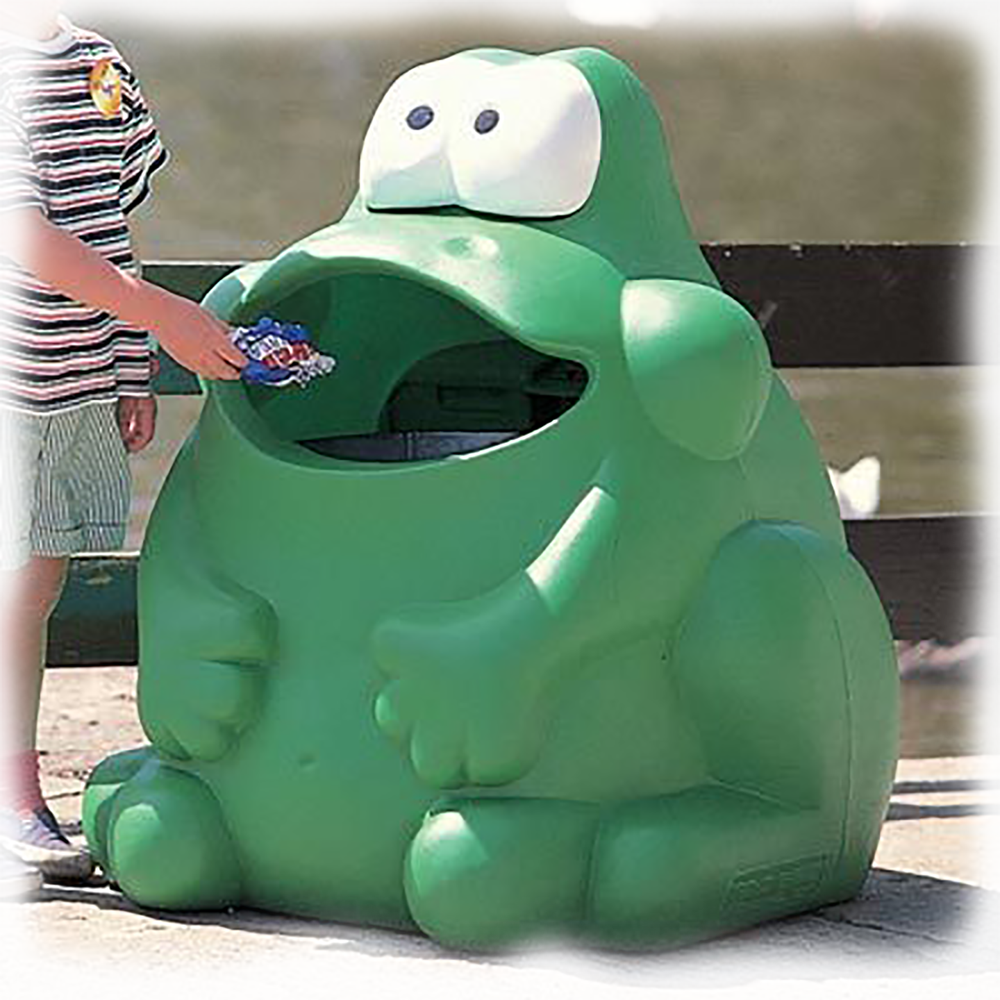

A senior in fresh graduate of Graphic Design at Rhode Island School of Design, Libby enjoys print and web publications, complex information systems, critical and creative writing, drawing and arranging letterforms, experimenting with code, and making clothes. We hear she comes from the "desert" of New Mexico. She is proud that she programmed this website all by herself but is sorry that it is kind of clunky...why not send her some mail?
emarrs@risd.edu
Are.na
Instagram